中国星官：三垣二十八宿
紫微垣(Purple Forbidden Enclosure)
- 右垣(Right wall)：右枢(Right pivot)，少尉(Second chief judge)，上辅(First minister)，少辅(Second minister)，上卫(First imperial guard)，少卫(Second imperial guard)，上丞(First prime minister)
- 左垣(Left wall)：左枢(Left pivot)，上宰(First premier)，少宰(Second premier)，上弼(First minister)，少弼(Second minister)，上卫(First imperial guard)，少卫(Second Imperial guard)，少丞(Second prime minister)
- 北极(Northern pole)：太子(Crown prince)，帝(Emperor)，庶子(Son of concubine)，后宫(Imperial concubine)，天枢(纽星，Celestial pivot)
- 北斗(Northern dipper)：天枢(Celestial pivot)，天璇(Celestial rotating jade)，天玑(Celestial shining pearl)，天权(Celestial balance)，玉衡(Jade sighting-tube)，开阳(Opener of heat)，摇光(Twinkling brilliance)
- 四辅(Four advisors)，勾陈(Curved array)，天柱(Celestial pillar)，御女(Maids-in-waiting)，尚书(Royal secretary)，天床(Celestial bed)，大理(Chief judge)，阴德(Hidden virtue)，六甲(Six JIA)，五帝内座(Interior seats of five emperors)，华盖(Canopy of the emperor)，杠(Canopy support)，内厨(Inner kitchen)，天枪(Celestial spear)，三公(Three excellencies)，天理(Judge for nobility)，天牢(Celestial prison)，势(Eunuch)，文昌(Administrative center)，内阶(Inner steps)，三师(Three top instructors)，八谷(Eight kinds of crops)，传舍(Guest house)，天厨(Celestial kitchen)，天棓(Celestial flail)
- 天皇大帝(Great Emperor of Heaven)，女史(Female protocol)，柱史(Official of royal archives)，天乙(天一，Celestial Great One)，太乙(太一，Frist Great One)，辅(Assistant)，玄戈(Somber lance)，相(Prime minister)，太阳守(Guard of the Sun)，太尊(Royals)
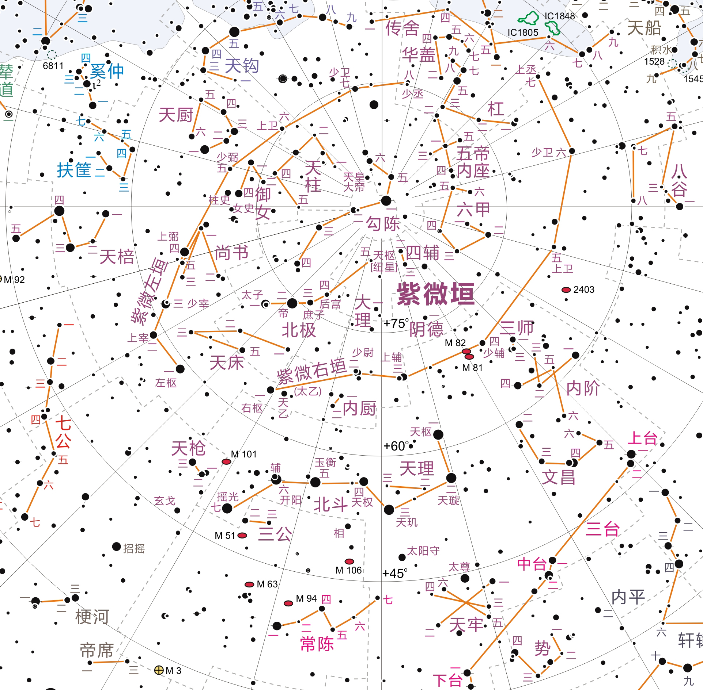
（点击以显示所有星官名图）
太微垣(Supreme Palace Enclosure)
- 右垣(Right wall)：右执法(Right law administrator)，西上将(First western general)，西次将(Second western general)，西次相(Second western minister)，西上相(First western minister)
- 左垣(Left wall)：左执法(Left law administrator)，东上相(First eastern minister)，东次相(Second eastern minister)，东次将(Second eastern general)，东上将(First eastern general)
- 三台(Three steps)：上台(Upper step)，中台(Middle step)，下台(Lower step)
- 五帝座(Seats of the five emperors)，五诸侯(Five feudal kings)，九卿(Nine senior officers)，三公(Three excellencies)，内屏(Inner screen)，郎位(Official of imperial guard)，常陈(Imperial guards)，少微(Junior officers)，长垣(Long wall)，灵台(Astronomical observatory)，明堂(Cosmological temple)
- 太子(Crown prince)，从官(Retinue)，幸臣(Officer of honor)，郎将(Captain of the bodyguards)，虎贲(Emperor's bodyguard)，谒者(Usher of the court)
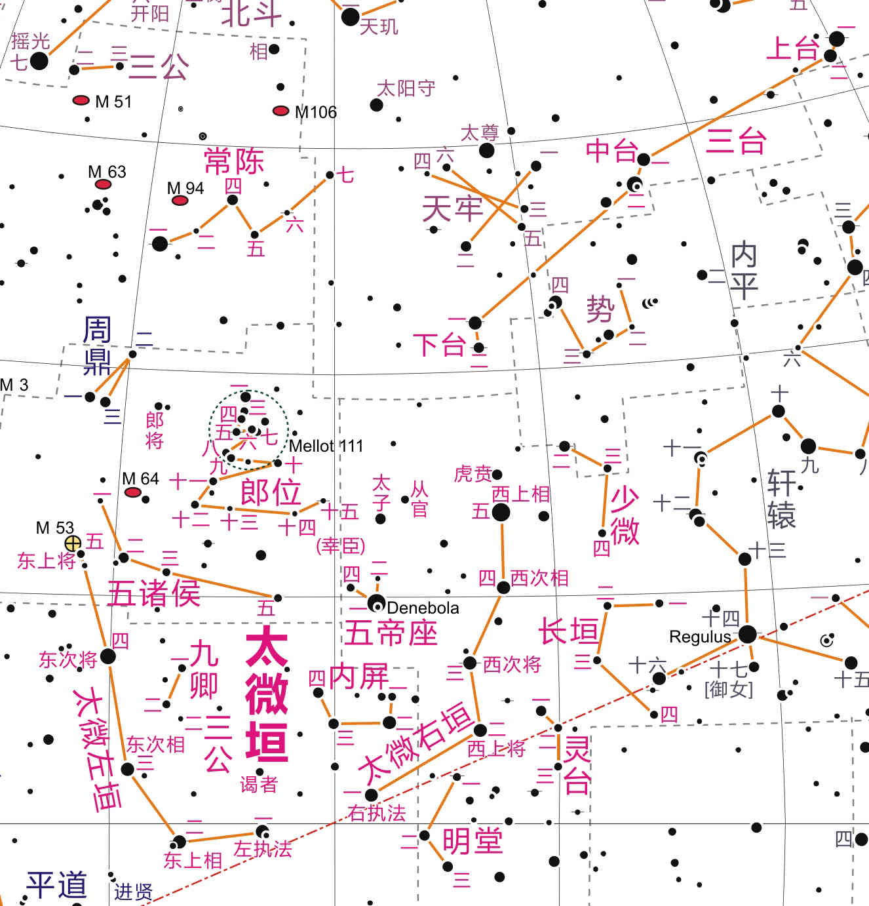
天市垣(Heavenly Market Enclosure)
- 右垣(Right wall)：河中(HEZHONG)，河间(HEJIAN)，晋(JIN)，郑(ZHENG)，周(ZHOU)，秦(QIN)，蜀(SHU)，巴(BA)，梁(LIANG)，楚(CHU)，韩(HAN)
- 左垣(Left wall)：魏(WEI)，赵(ZHAO)，九河(JIUHE)，中山(ZHONGSHAN)，齐(QI)，吴越(WUYUE)，徐(XU)，东海(DONGHAI)，燕(YAN)，南海(NANHAI)，宋(SONG)
- 宦者(Eunuch official)，斗(Dipper for liquids)，斛(Dipper for solids)，列肆(Jewel market)，车肆(Commodity market)，市楼(Municipal office)，宗正(Official for royal clan)，宗人(Official of religious ceremonies)，宗(Patriarchal clan)，帛度(Textile ruler)，屠肆(Butcher's shops)，天纪(Celestial Discipline)，女床(Woman's bed)，贯索(Coiled thong)，七公(Seven excellencies)
- 帝座(Emperor's seat)，候(Astrologer)
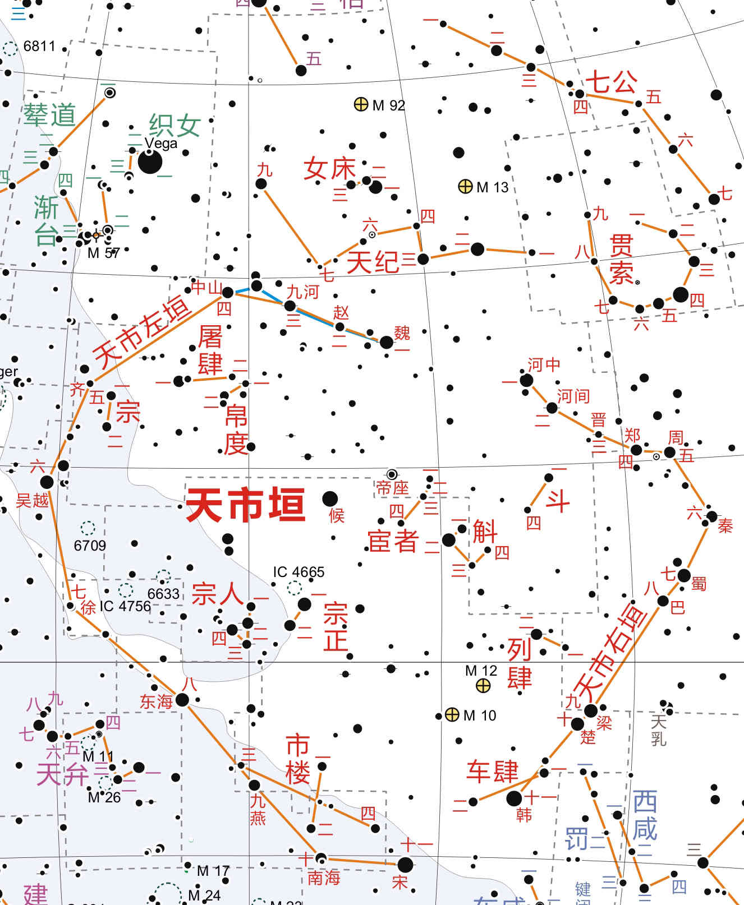
东宫苍龙(Azure Dragon of the East)
角宿(Horn Mansion)
- 平道(Flat road)，天田(Celestial farmland)，周鼎(Tripod of the ZHOU)，天门(Celestial gate)，平(Judging)，库楼(Arsenal)，柱(Pillars)，衡(Railings)，南门(Southern gate)
- 进贤(Recommending virtuous man)
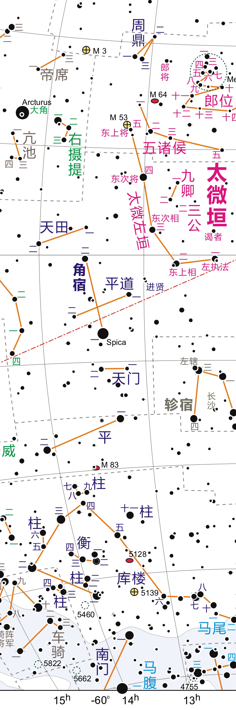
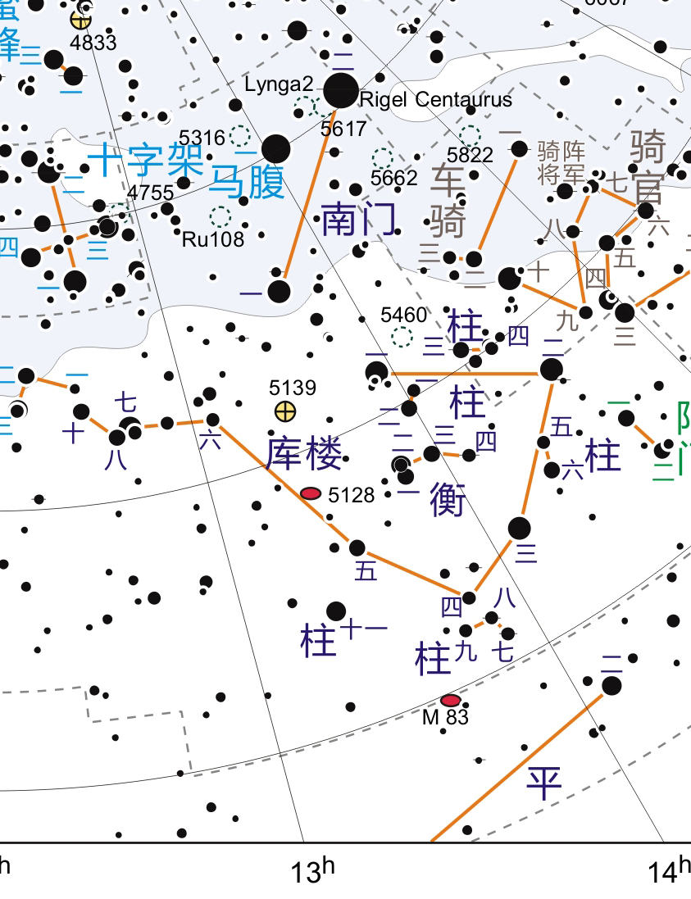
亢宿(Neck Mansion)
- 右摄提(Right conductor)，左摄提(Left conductor)，折威(Executions)，顿顽(Trials)，阳门(Gate of YANG)
- 大角(Great horn)
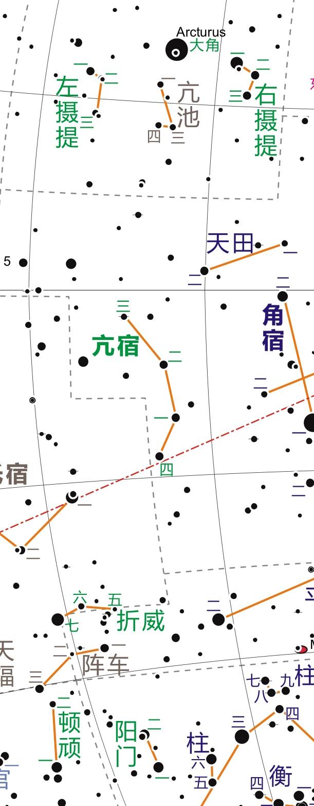
氐宿(Root Mansion)
- 亢池(Boats and lake)，帝席(Mattress of the emperor)，梗河(Celestial lance)，天辐(Celestial spokes)，阵车(Battle chariots)，骑官(Imperial guards)，车骑(Chariots and cavalry)
- 招摇(Twinkling indicator)，天乳(Celestial milk)，骑阵将军(Chariot and Cavalry general)
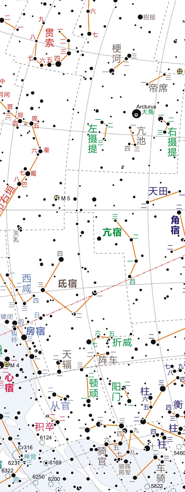
房宿(Room Mansion)
- 钩钤(Lock)，罚(Punishment)，西咸(Eastern door)，东咸(Western door)，从官(Retinue)
- 键闭(Door bolt)，日(Sun)
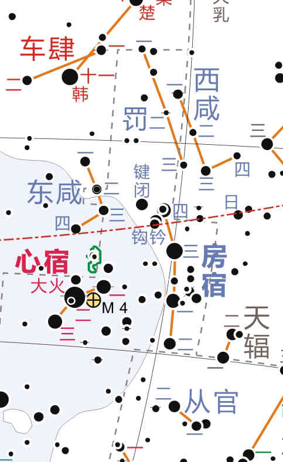
心宿(Heart Mansion)
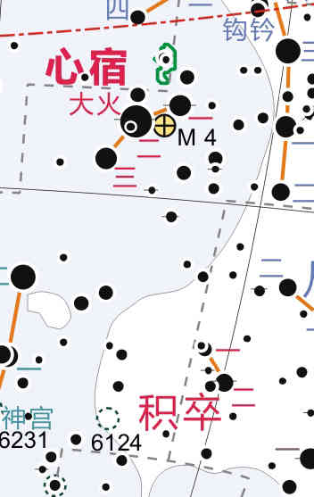
尾宿(Tail Mansion)
- 天江(Celestial river)，龟(Tortoise)
- 神宫(Changing room)，傅说(FUYUE)，鱼(Fish)
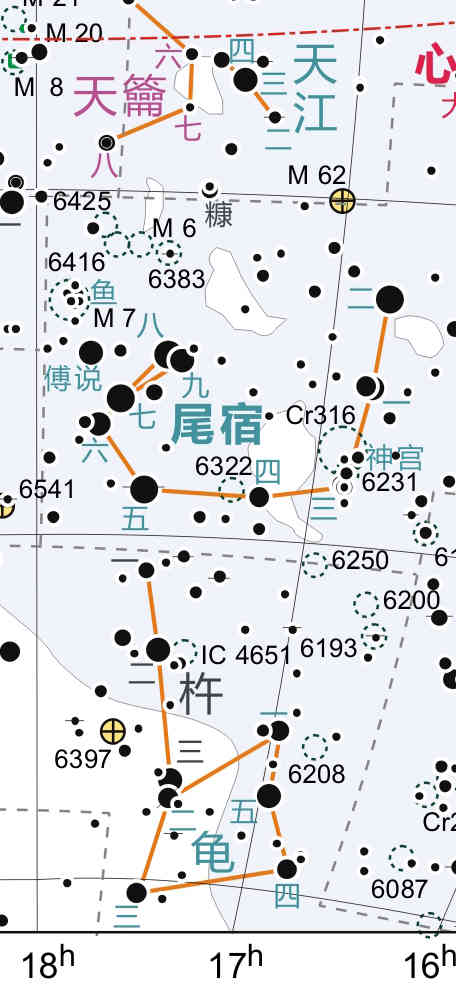
箕宿(Winnowing-basket Mansion)
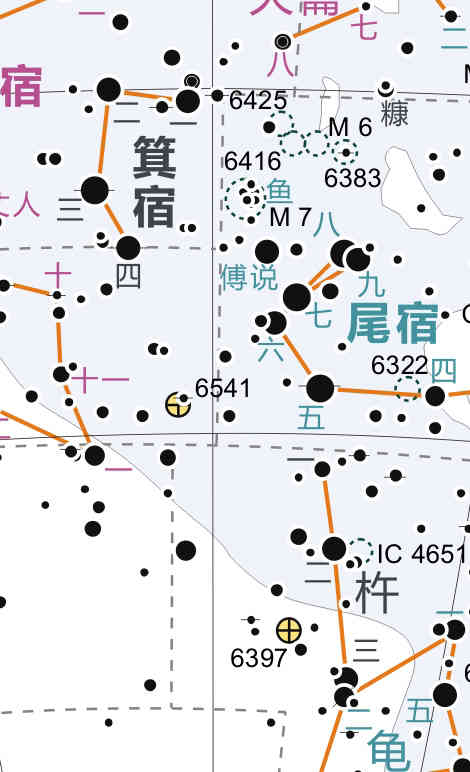
北宫玄武(Murky Warrior of the North)
斗宿(Dipper Mansion)
- 天籥(Celestial keyhole)，天弁(Market officer)，建(Establishment)，天鸡(Celestial cock)，狗(Dog)，狗国(Territory of dogs)，天渊(Celestial spring)，鳖(River turtle)
- 农丈人(Peasant)
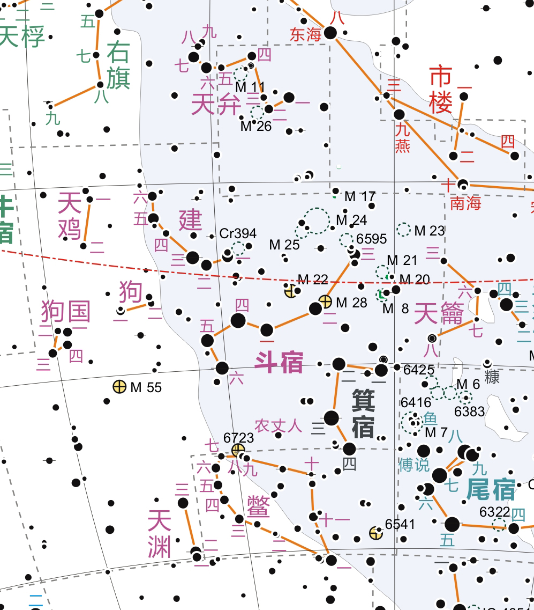
牛宿(Ox Mansion)
- 天桴(Celestial drumstick)，河鼓(Drum at the river)，右旗(Right flag)，左旗(Left flag)，织女(Weaving girl)，渐台(Clepsydra terrace)，辇道(Imperial passageway)，罗堰(Networks of dykes)，天田(Celestial farmland)，九坎(Nine water wells)

女宿(Girl Mansion)
- 十二国(Twelve countries)：周(ZHOU)，秦(QIN)，代(DAI)，赵(ZHAO)，越(YUE)，齐(QI)，楚(CHU)，郑(ZHENG)，魏(WEI)，韩(HAN)，晋(JIN)，燕(YAN)
- 离珠(Pearls on ladies' wear)，败瓜(Rotten gourd)，瓠瓜(Good gourd)，天津(Celestial ford)，奚仲(XIZHONG)，扶筐(Basket for mulberry leaves)

虚宿(Emptiness Mansion)
- 司命(Deified judge of life)，司禄(Deified judge of rank)，司危(Deified judge of disaster and good fortune)，司非(Deified judge of right and wrong)，哭(Crying)，泣(Weeping)，离瑜(Jade ornament on ladies' wear)，天垒城(Celestial ramparts)，败臼(Decayed Mortar)
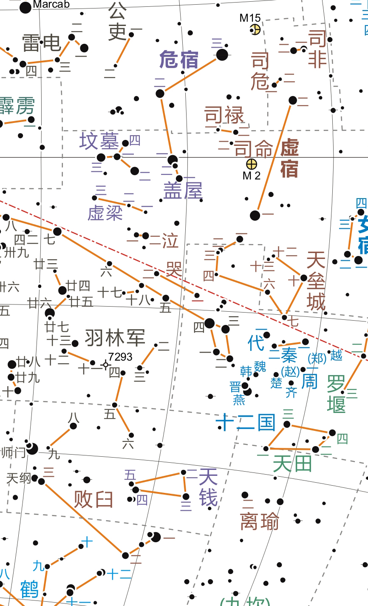
危宿(Rooftop Mansion)
- 坟墓(Tomb)，盖屋(Roofing)，虚梁(Temple)，天钱(Celestial money)，人(Humans)，杵(Pestle)，臼(Mortar)，车府(Big yard for chariots)，造父(ZAOFU)，天钩(Celestial hook)
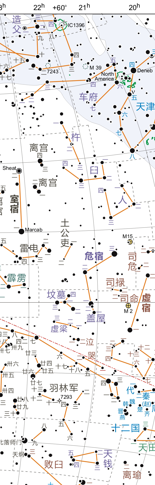
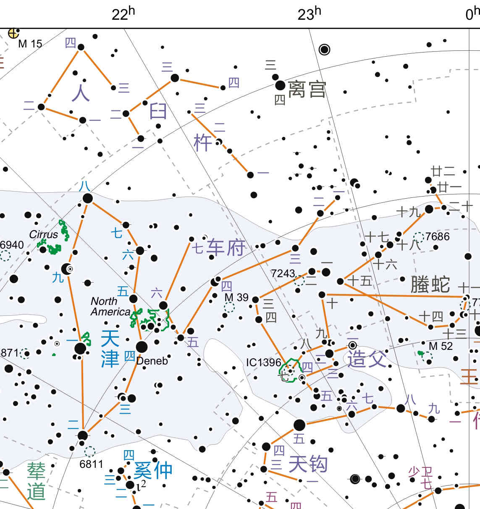
室宿(Encampment Mansion)
- 离宫(Resting palace)，螣蛇(Flying serpent)，雷电(Thunder and lightning)，土公吏(Official for materials supply)，垒壁阵(The line of ramparts)，羽林军(Palace guard)，鈇钺(Axe)，八魁(Net for catching birds)
- 天纲(Materials for Making Tents)，北落师门(North gate of the military camp)
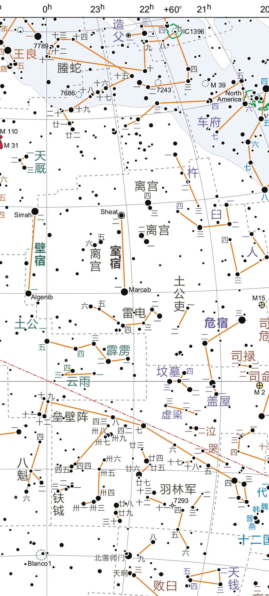
壁宿(Wall Mansion)
- 天厩(Celestial stable)，土公(Official for earthworks and buildings)，霹雳(Thunderbolt)，云雨(Cloud and rain)，鈇锧(Sickle)
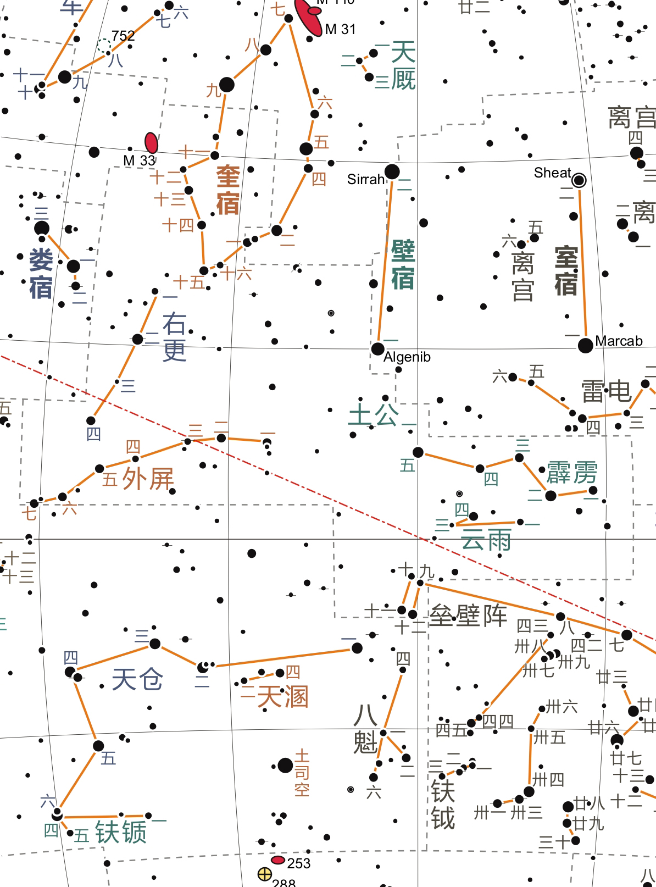
西宫白虎(White Tiger of the West)
奎宿(Legs Mansion)
- 王良(WANGLIANG)，阁道(Flying corridor)，外屏(Outer fence)，天溷(Celestial pigsty)
- 策(Whip)，附路(Auxiliary road)，军南门(Southern military gate)，土司空(Master of constructions)
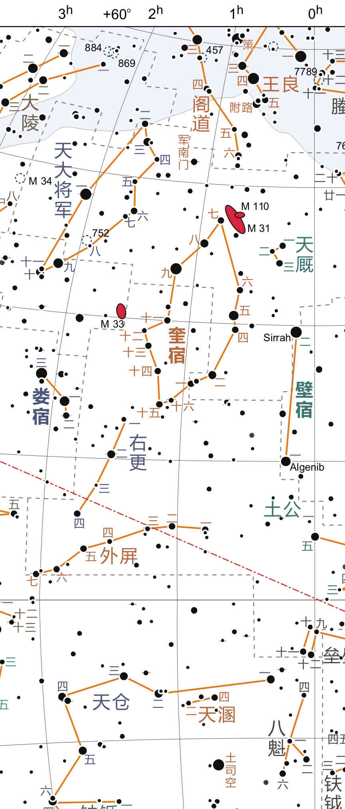
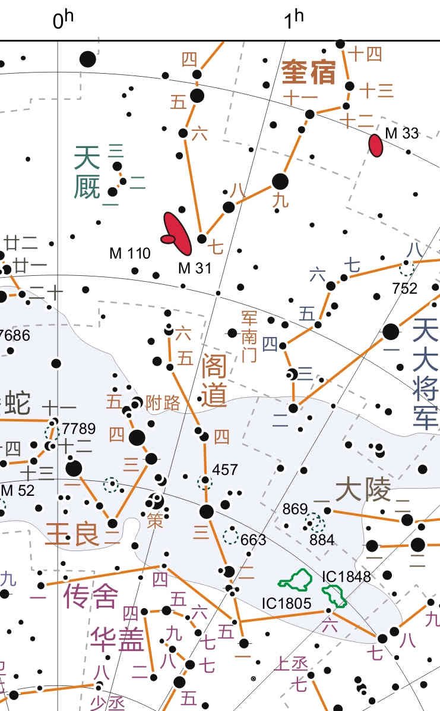
娄宿(Bond Mansion)
- 天大将军(Great general of the heaven)，右更(Official in charge of pasturing)，左更(Official in charge of forest)，天仓(Square celestial granary)，天庾(Ricks of grain)
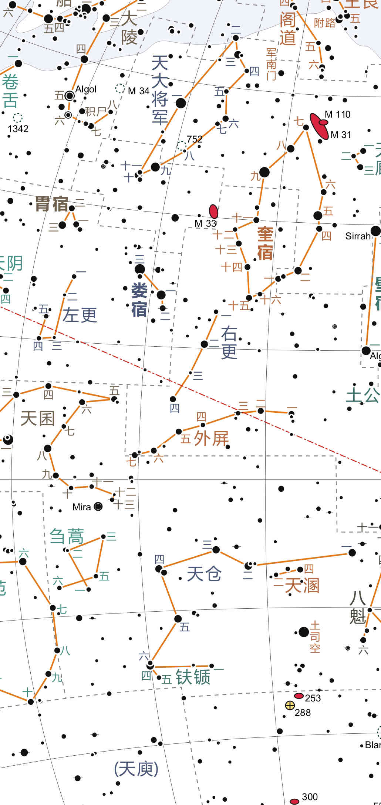
胃宿(Stomach Mansion)
- 大陵(Mausoleum)，天船(Celestial boat)，天廪(Celestial foodstuffs)，天囷(Circular celestial granary)
- 积尸(Heaps of corpses)，积水(Stored water)
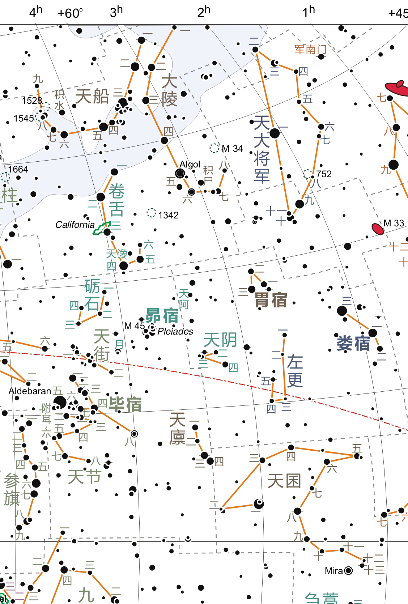
昴宿(Hairy Head Mansion)
- 卷舌(Rolled tongue)，砺石(Whetstone)，天阴(Celestial YIN force)，刍蒿(Hay)，天苑(Celestial meadows)
- 天阿(Celestial river)，月(Moon)，天谗(Celestial slander)
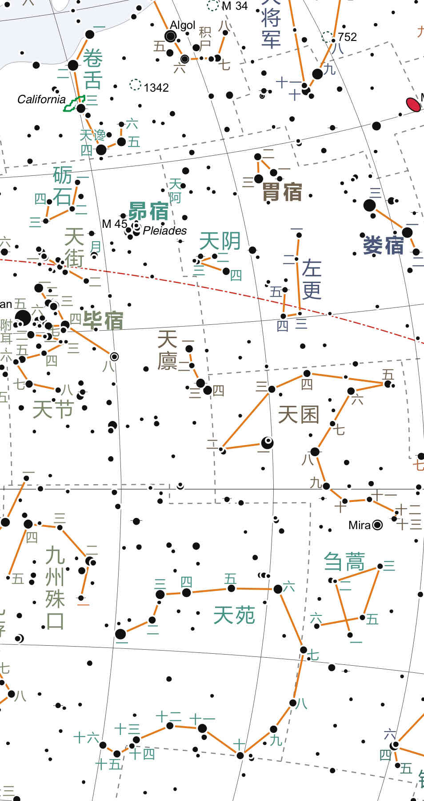
毕宿(Net Mansion)
- 天街(Celestial street)，天高(Celestial high terrace)，诸王(Feudal kings)，五车(Five chariots)，柱(Pillars)，咸池(Pool of harmony)，天潢(Celestial pier)，天节(Celestial tally)，九州殊口(Interpreters of nine dialects)，参旗(Banner of three stars)，九斿(Imperial military flag)，天园(Celestial orchard)
- 附耳(Whisper)，天关(Celestial gate)
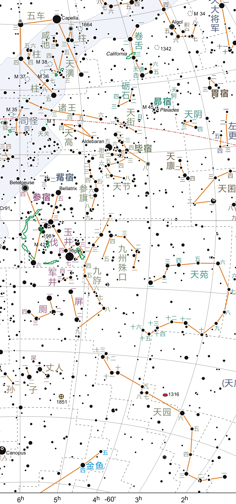
觜宿(Turtle Beak Mansion)
- 司怪(Deity in charge of monsters)，座旗(Seat flags)
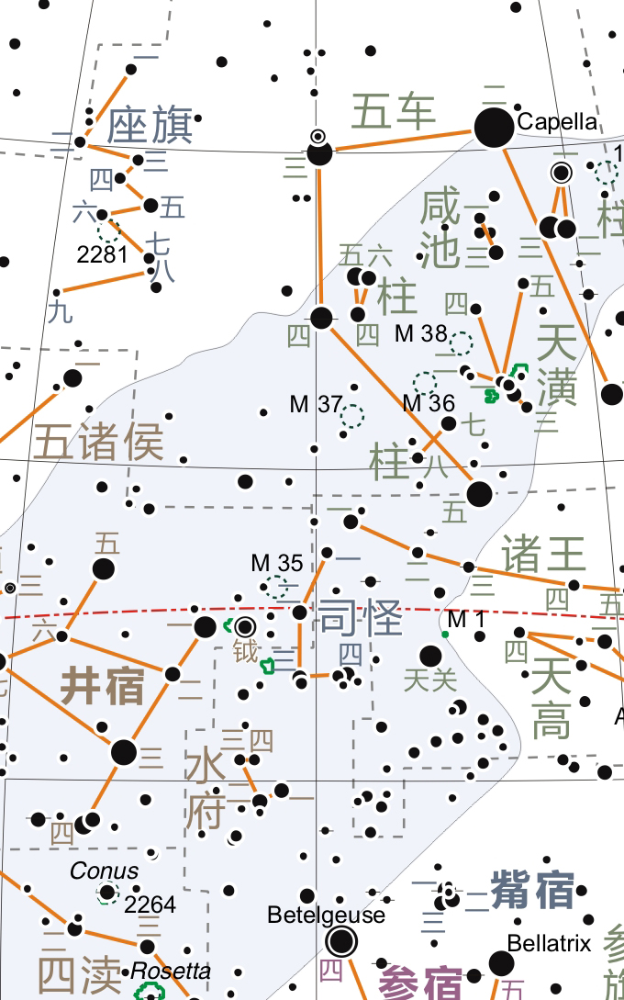
参宿(Three Stars Mansion)
- 伐(Punishment)，玉井(Jade well)，军井(Military well)，屏(Screen)，厕(Toilet)
- 屎(Excrement)
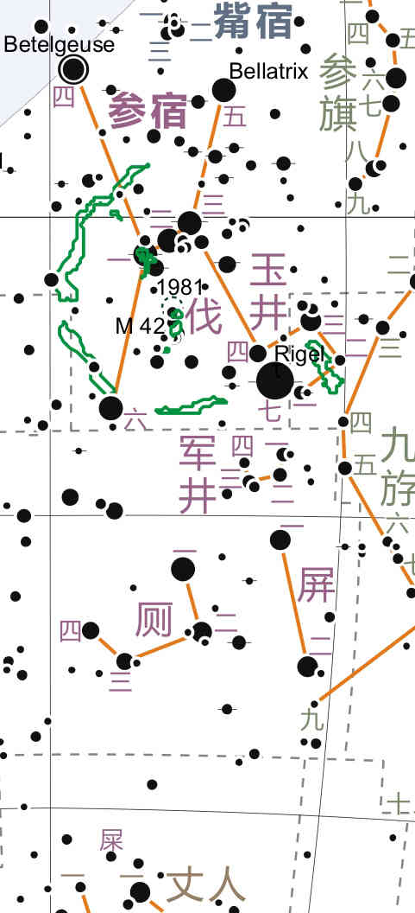
南宫朱雀(Vermilion Bird of the South)
井宿(Well Mansion)
- 水府(Official for irrigation)，天樽(Celestial wine cup)，五诸侯(Five feudal kings)，北河(North river)，水位(Water level)，南河(South river)，四渎(Four channels)，阙丘(Palace gate)，军市(Market for the soldiers)，丈人(Grandfather)，子(Son)，孙(Grandson)，弧矢(Bow and arrow)
- 钺(Battle axe)，积水(Accumulated water)，积薪(Pile of firewood)，野鸡(Wild cockerel)，天狼(Celestial wolf)，老人(Old man)
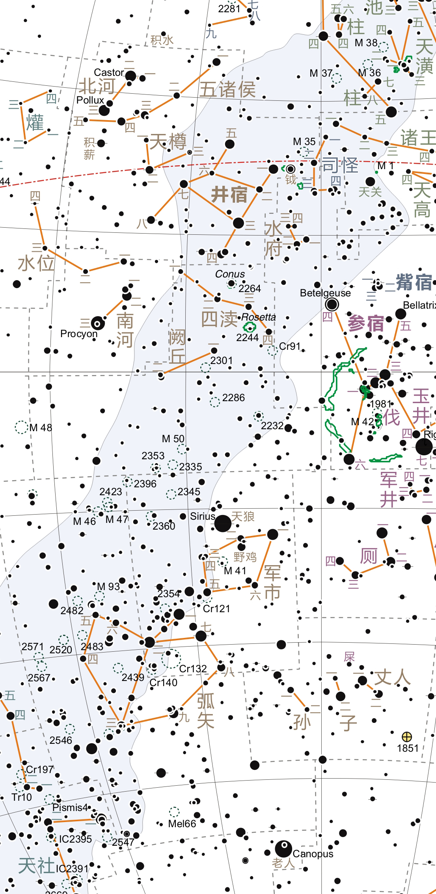
鬼宿(Ghosts Mansion)
- 爟(Beacon fire)，外厨(Outer kitchen)，天狗(Celestial dog)，天社(Celestial earth god's temple)
- 积尸(Cumulative corpses)，天记(Judge to estimate the age of animals)
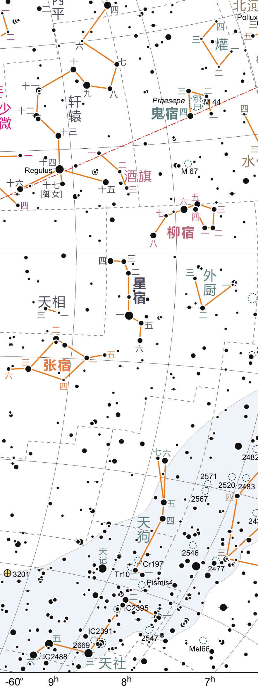
柳宿(Willow Mansion)
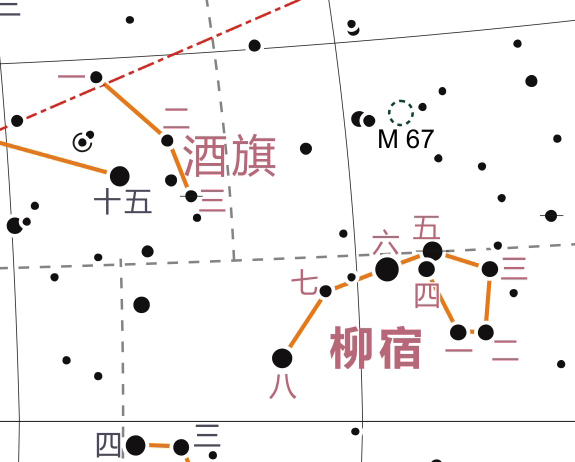
星宿(Star Mansion)
- 天相(Celestial premier)，轩辕(XUANYUAN)，内平(High judge)，天稷*(Celestial cereals)
- 御女(Maids-in-waiting)
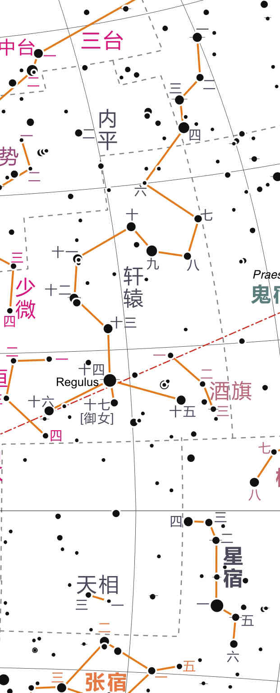
张宿(Extended Net Mansion)
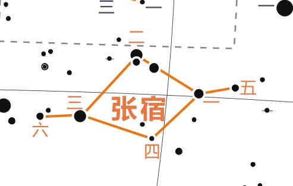
翼宿(Wings Mansion)
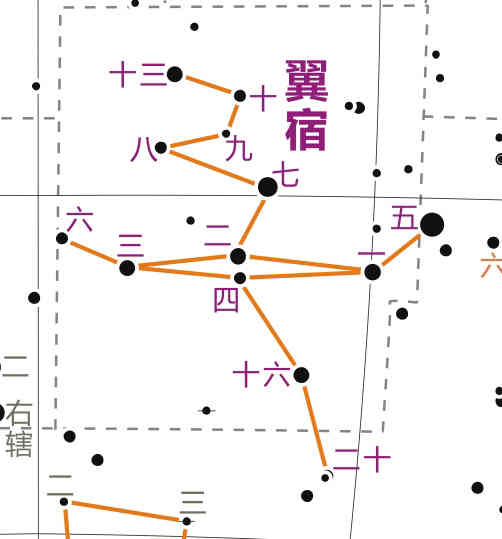
轸宿(Chariot Mansion)
- 青丘(Green hill)，军门*(Military Gate)，土司空*(Master of Construction)，器府*(House for Musical Instruments)
- 右辖(Right linchpin)，左辖(Left linchpin)，长沙(CHANGSHA)
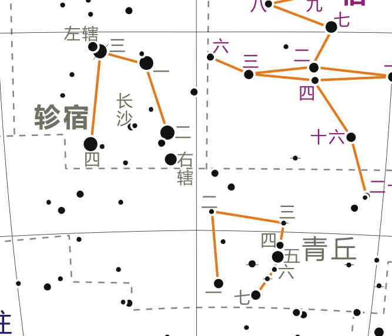
南极星区(Southern Sky)
- 海山(Sea and mountain)，十字架(Cross)，马尾(Horse's tail)，马腹(Horse's abdomen)，蜜蜂(Bee)，三角形(Triangle)，异雀(Exotic bird)，孔雀(Peacock)，波斯(Persia)，蛇尾(Snake's tail)，蛇腹(Snake's abdomen)，蛇首(Snake's head)，鸟喙(Bird's beak)，鹤(Crane)，火鸟(Firebird)，水委(Crooked running water)，附白(White patches nearby)，夹白(White Patch attached)，金鱼(Goldfish)，海石(Sea rock)，飞鱼(Flying fish)，南船(Southern boat)，小斗(Little dipper)
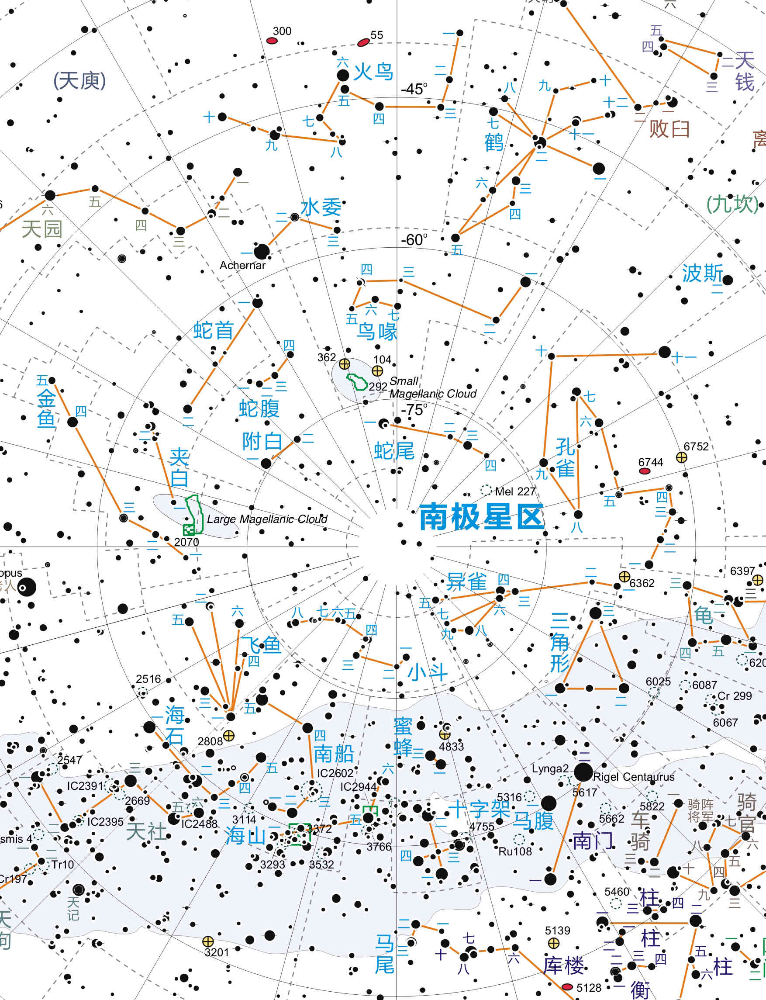
天文历法相关表格
十二辰、十二次、二十八宿和十二分野
| 方位 |
北方玄武 |
西方白虎 |
南方朱雀 |
东方苍龙 |
| 十二辰（太阳视运动） |
丑 |
子 |
亥 |
戌 |
酉 |
申 |
未 |
午 |
巳 |
辰 |
卯 |
寅 |
| 十二次（岁星纪年） |
星纪 |
玄枵 |
娵訾 |
降娄 |
大梁 |
实沈 |
鹑首 |
鹑火 |
鹑尾 |
寿星 |
大火 |
析木 |
| 二十八宿 |
斗、牛 |
女、虚、危 |
室、壁 |
奎、娄 |
胃、昴、毕 |
觜、参 |
井、鬼 |
柳、星、张 |
翼、轸 |
角、亢 |
氐、房、心 |
尾、箕 |
| 十二分野 |
吴·扬州 |
齐·青州 |
卫·并州 |
鲁·徐州 |
赵·冀州 |
晋·益州 |
秦·雍州 |
周·三河 |
楚·荆州 |
郑·兖州 |
宋·豫州 |
燕·幽州 |
| 太岁纪年地支 |
寅 |
卯 |
辰 |
巳 |
午 |
未 |
申 |
酉 |
戌 |
亥 |
子 |
丑 |
太岁纪年岁阳
| 天干 |
甲
| 乙
| 丙
| 丁
| 戊
| 己
| 庚
| 辛
| 壬
| 癸
|
| 尔雅岁名 |
阏逢 |
旃蒙 |
柔兆 |
强圉 |
著雍 |
屠维 |
上章 |
重光 |
玄黓 |
昭阳 |
| 史记岁名 |
焉逢 |
端蒙 |
游兆 |
彊梧 |
徒维 |
祝犁 |
商横 |
昭阳 |
横艾 |
尚章 |
太岁纪年岁阴
| 地支 |
子
| 丑
| 寅
| 卯
| 辰
| 巳
| 午
| 未
| 申
| 酉
| 戌
| 亥
|
| 尔雅岁名 |
困敦 |
赤奋若 |
摄提格 |
单阏 |
执徐 |
大荒落 |
敦牂 |
协洽 |
涒滩 |
作噩 |
阉茂 |
大渊献 |
| 史记岁名 |
困敦 |
赤奋若 |
摄提格 |
单阏 |
执徐 |
大荒骆 |
敦牂 |
叶洽 |
涒滩 |
作鄂 |
阉茂 |
大渊献 |
星宿相关古文编集
尚书·尧典
……（帝尧）乃命羲和，钦若昊天，历象日月星辰，敬授人时。分命羲仲，宅嵎夷，曰旸谷。寅宾出日，平秩东作。日中，星鸟，以殷仲春。厥民析，鸟兽孳尾。申命羲叔，宅南交。平秩南讹，敬致。日永，星火，以正仲夏。厥民因，鸟兽希革。分命和仲，宅西，曰昧谷。寅饯纳日，平秩西成。宵中，星虚，以殷仲秋。厥民夷，鸟兽毛毨。申命和叔，宅朔方，曰幽都。平在朔易。日短，星昴，以正仲冬。厥民隩，鸟兽氄毛。帝曰：“咨！汝羲暨和。期三百有六旬有六日，以闰月定四时，成岁。允釐百工，庶绩咸熙。”……
大戴礼记·夏小正
正月：……鞠则见。鞠者何？星名也。鞠则见者，岁再见尔。初昏参中。盖记时也云。斗柄县在下。言斗柄者，所以著参之中也。……
二月：……
三月：参则伏。伏者，非亡之辞也。星无时而不见，我有不见之时，故曰伏云。……
四月：昴则见。初昏南门正。南门者，星也。岁再见。壹正，盖大正所取法也。……
五月：参则见。参也者，伐星也，故尽其辞也。……初昏大火中。大火者，心也。……
六月：初昏斗柄正在上。五月大火中，六月斗柄正在上，用此见斗柄之不正当心也，盖当依依尾也。……
七月：……汉案户。汉也者，河也。案户也者，直户也，言正南北也。……初昏织女正东乡。……斗柄县在下则旦。
八月：……辰则伏。辰也者，谓星也。伏也者，入而不见也。……参中则旦。
九月：内火。内火也者，大火；大火也者，心也。……辰系于日。……
十月：……初昏南门见。南门者，星名也，及此再见矣。……织女正北乡，则旦。织女，星名也。
十一月：……日冬至，阳气至，始动，……
十二月：……
尔雅·释天
…………
大岁在甲曰阏逢，在乙曰旃蒙，在丙曰柔兆，在丁曰强圉，在戊曰著雍，在己曰屠维，在庚曰上章，在辛曰重光，在壬曰玄黓，在癸曰昭阳。——岁阳。
大岁在寅曰摄提格，在卯曰单阏，在辰曰执徐，在巳曰大荒落，在午曰敦牂，在未曰协洽，在申曰涒滩，在酉曰作噩，在戌曰阉茂，在亥曰大渊献，在子曰困敦，在丑曰赤奋若。
…………
寿星，角亢也。天根，氐也。天驷，房也。大辰，房心尾也。大火谓之大辰，析木谓之津。箕斗之间，汉津也。星纪，斗牵牛也。玄枵，虚也。颛顼之虚，虚也。北陆，虚也。营室谓之定。娵觜之口，营室东壁也。降娄，奎娄也。大梁，昴也。西陆，昴也。浊谓之毕，咮谓之柳。柳，鹑火也。北极谓之北辰，何鼓谓之牵牛，明星谓之启明。彗星为欃枪，奔星为彴约。——星名。
…………
礼记·月令
孟春之月，日在营室，昏参中，旦尾中。……
仲春之月，日在奎，昏弧中，旦建星中。……
季春之月，日在胃，昏七星中，旦牵牛中。……
孟夏之月，日在毕，昏翼中，旦婺女中。……
仲夏之月，日在东井，昏亢中，旦危中。……
季夏之月，日在柳，昏火中，旦奎中。……
孟秋之月，日在翼，昏建星中，旦毕中。……
仲秋之月，日在角，昏牵牛中，旦觜觿中。……
季秋之月，日在房，昏虚中，旦柳中。……
孟冬之月，日在尾，昏危中，旦七星中。……
仲冬之月，日在斗，昏东壁中，旦轸中。……
季冬之月，日在婺女，昏娄中，旦氐中。……
史记·天官书
中宫天极星，其一明者，太一常居也；旁三星三公，或曰子属。后句四星，末大星正妃，馀三星后宫之属也。环之匡卫十二星，藩臣。皆曰紫宫。
前列直斗口三星，随北端兑，若见若不，曰阴德，或曰天一。紫宫左三星曰天枪，右五星曰天棓，后六星绝汉抵营室，曰阁道。
北斗七星，所谓“旋、玑、玉衡以齐七政”。杓携龙角，衡殷南斗，魁枕参首。用昏建者杓；杓，自华以西南。夜半建者衡；衡，殷中州河、济之闲。平旦建者魁；魁，海岱以东北也。斗为帝车，运于中央，临制四乡。分阴阳，建四时，均五行，移节度，定诸纪，皆系于斗。
（点击以显示全文）
斗魁戴匡六星曰文昌宫：一曰上将，二曰次将，三曰贵相，四曰司命，五曰司中，六曰司禄。在斗魁中，贵人之牢。魁下六星，两两相比者，名曰三能。三能色齐，君臣和；不齐，为乖戾。辅星明近，辅臣亲强；斥小，疏弱。
杓端有两星：一内为矛，招摇；一外为盾，天锋。有句圜十五星，属杓，曰贱人之牢。其牢中星实则囚多，虚则开出。
天一、枪、棓、矛、盾动摇，角大，兵起。
东宫苍龙，房、心。心为明堂，大星天王，前后星子属。不欲直，直则天王失计。房为府，曰天驷。其阴，右骖。旁有两星曰衿；北一星曰辖。东北曲十二星曰旗。旗中四星天市；中六星曰市楼。市中星众者实；其虚则秏。房南众星曰骑官。
左角，李；右角，将。大角者，天王帝廷。其两旁各有三星，鼎足句之，曰摄提。摄提者，直斗杓所指，以建时节，故曰“摄提格”。亢为疏庙，主疾。其南北两大星，曰南门。氐为天根，主疫。
尾为九子，曰君臣；斥绝，不和。箕为敖客，曰口舌。
火犯守角，则有战。房、心，王者恶之也。
南宫朱鸟，权、衡。衡，太微，三光之廷。匡卫十二星，藩臣：西，将；东，相；南四星，执法；中，端门；门左右，掖门。门内六星，诸侯。其内五星，五帝坐。后聚一十五星，蔚然，曰郎位；傍一大星，将位也。月、五星顺入，轨道，司其出，所守，天子所诛也。其逆入，若不轨道，以所犯命之；中坐，成形，皆群下从谋也。金、火尤甚。廷藩西有隋星五，曰少微，士大夫。权，轩辕。轩辕，黄龙体。前大星，女主象；旁小星，御者后宫属。月、五星守犯者，如衡占。
东井为水事。其西曲星曰钺。钺北，北河；南，南河；两河、天阙闲为关梁。舆鬼，鬼祠事；中白者为质。火守南北河，兵起，谷不登。故德成衡，观成潢，伤成钺，祸成井，诛成质。
柳为鸟注，主木草。七星，颈，为员官。主急事。张，素，为厨，主觞客。翼为羽翮，主远客。
轸为车，主风。其旁有一小星，曰长沙，星星不欲明；明与四星等，若五星入轸中，兵大起。轸南众星曰天库楼；库有五车。车星角若益众，及不具，无处车马。
西宫咸池，曰天五潢。五潢，五帝车舍。火入，旱；金，兵；水，水。中有三柱；柱不具，兵起。
奎曰封豕，为沟渎。娄为聚众。胃为天仓。其南众星曰廥积。
昴曰髦头，胡星也，为白衣会。毕曰罕车，为边兵，主弋猎。其大星旁小星为附耳。附耳摇动，有谗乱臣在侧。昴、毕闲为天街。其阴，阴国；阳，阳国。
参为白虎。三星直者，是为衡石。下有三星，兑，曰罚，为斩艾事。其外四星，左右肩股也。小三星隅置，曰觜觿，为虎首，主葆旅事。其南有四星，曰天厕。厕下一星，曰天矢。矢黄则吉；青、白、黑，凶。其西有句曲九星，三处罗：一曰天旗，二曰天苑，三曰九游。其东有大星曰狼。狼角变色，多盗贼。下有四星曰弧，直狼。狼比地有大星，曰南极老人。老人见，治安；不见，兵起。常以秋分时候之于南郊。
附耳入毕中，兵起。
北宫玄武，虚、危。危为盖屋；虚为哭泣之事。
其南有众星，曰羽林天军。军西为垒，或曰钺。旁有一大星为北落。北落若微亡，军星动角益希，及五星犯北落，入军，军起。火、金、水尤甚：火，军忧；水，患；木、土，军吉。危东六星，两两相比，曰司空。
营室为清庙，曰离宫、阁道。汉中四星，曰天驷。旁一星，曰王良。王良策马，车骑满野。旁有八星，绝汉，曰天潢。天潢旁，江星。江星动，人涉水。
杵、臼四星，在危南。匏瓜，有青黑星守之，鱼盐贵。
南斗为庙，其北建星。建星者，旗也。牵牛为牺牲。其北河鼓。河鼓大星，上将；左右，左右将。婺女，其北织女。织女，天女孙也。
察日、月之行以揆岁星顺逆。曰东方木，主春，日甲、乙。……
以摄提格岁：岁阴左行在寅，岁星右转居丑。正月，与斗、牵牛晨出东方，名曰监德。色苍苍有光。其失次，有应见柳。岁早，水；晚，旱。
岁星出，东行十二度，百日而止，反逆行；逆行八度，百日，复东行。岁行三十度十六分度之七，率日行十二分度之一，十二岁而周天。出常东方，以晨；入于西方，用昏。
单阏岁：岁阴在卯，星居子。以二月与婺女、虚、危晨出，曰降入。大有光。其失次，有应见张。其岁大水。
执徐岁：岁阴在辰，星居亥。以三月与营室、东壁晨出，曰青章。青青甚章。其失次；有应见轸。岁早，旱；晚，水。
大荒骆岁：岁阴在巳，星居戌。以四月与奎、娄晨出，曰跰踵。熊熊赤色，有光。其失次，有应见亢。
敦牂岁：岁阴在午，星居酉。以五月与胃、昴、毕晨出，曰开明。炎炎有光。偃兵；唯利公王，不利治兵。其失次，有应见房。岁早，旱；晚，水。
协洽岁：岁阴在未，星居申。以六月与觜觿、参晨出，曰长列。昭昭有光。利行兵。其失次，有应见箕。
涒滩岁：岁阴在申，星居未。以七月与东井、舆鬼晨出，曰大音。昭昭白。其失次，有应见牵牛。
作鄂岁：岁阴在酉，星居午。以八月与柳、七星、张晨出，曰长王。作作有芒。国其昌，熟谷。其失次，有应见危。有旱而昌，有女丧，民疾。
阉茂岁：岁阴在戌，星居巳。以九月与翼、轸晨出，曰天睢。白色大明。其失次，有应见东壁。岁水，女丧。
大渊献岁：岁阴在亥，星居辰。以十月与角、亢晨出，曰大章。苍苍然，星若跃而阴出旦，是谓“正平”。起师旅，其率必武；其国有德，将有四海。其失次，有应见娄。
困敦岁：岁阴在子，星居卯。以十一月与氐、房、心晨出，曰天泉。玄色甚明。江池其昌，不利起兵。其失次，有应昴。
赤奋若岁：岁阴在丑，星居寅，以十二月与尾、箕晨出，曰天皓。黫然黑色甚明。其失次，有应见参。
…………
察刚气以处荧惑。曰南方火，主夏，日丙、丁。……
历斗之会以定填星之位。曰中央土，主季夏，日戊、己。……
察日行以处位太白。曰西方，秋，日庚、辛。……
察日辰之会，以治辰星之位。曰北方水，太阴之精，主冬，日壬、癸。……
…………